Arazzo Specification Structure
(6) Arazzo Specification Structure
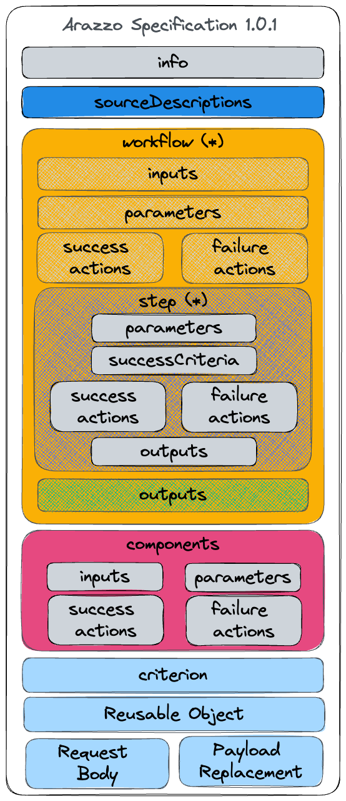
(7) Arazzo Specification: Info Object
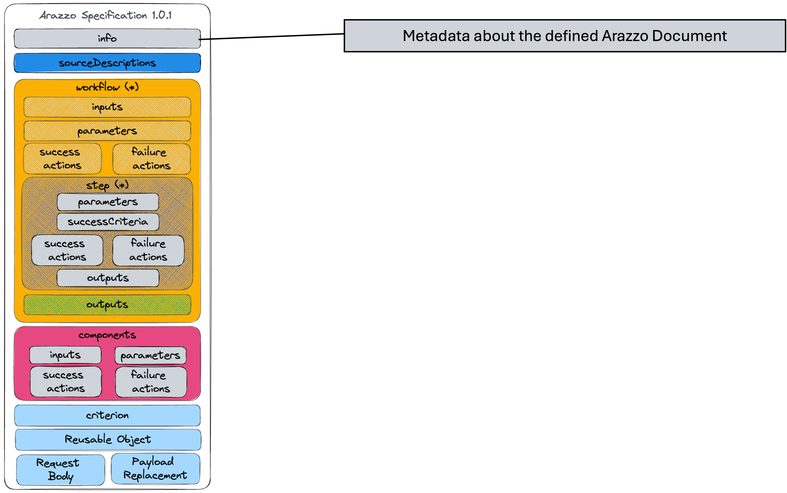
(8) Arazzo Specification: Info Object Example
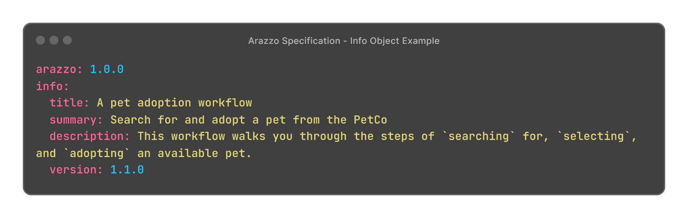
(9) Arazzo Specification: Source Descriptions

(10) Arazzo Specification: Source Descriptions Example
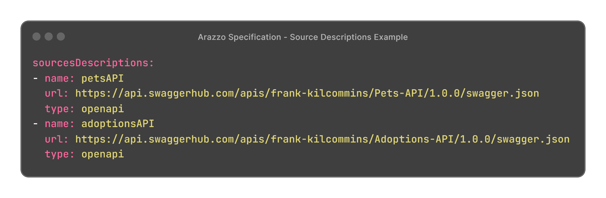
(11) Arazzo Specification: Workflows
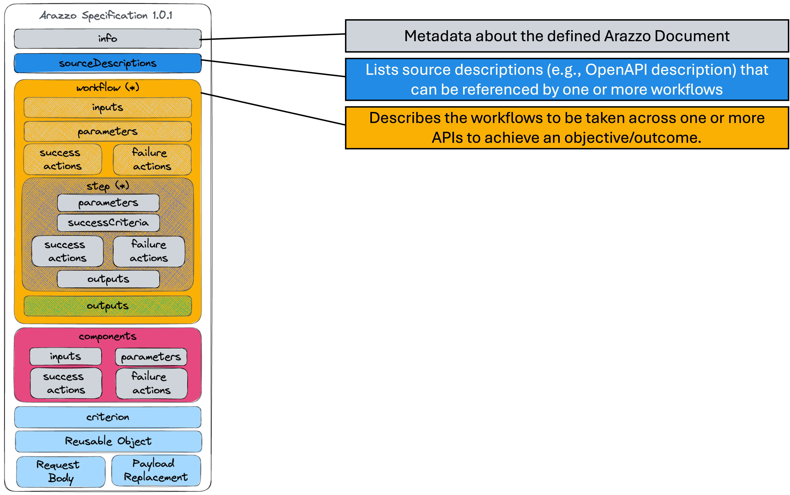
(12) Arazzo Specification: Workflows Example

(13) Arazzo Specification: Inputs
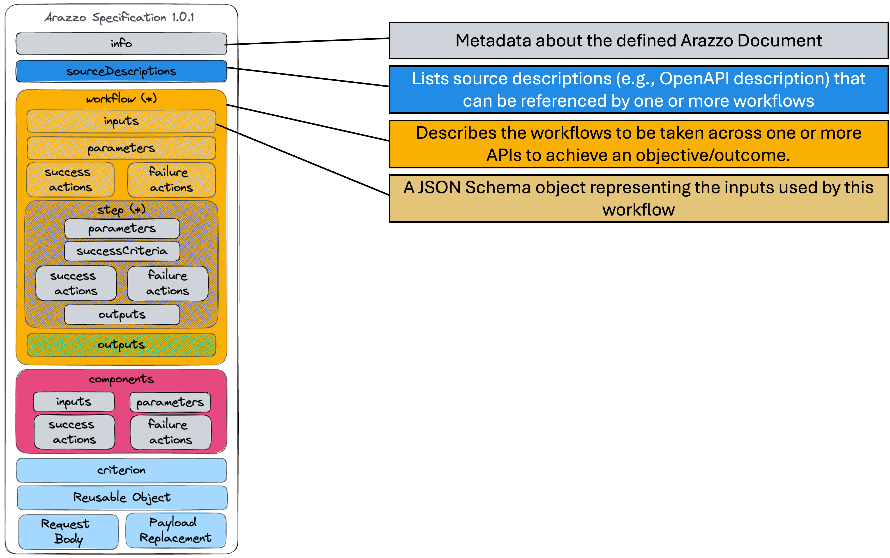
(15) Arazzo Specification: Steps
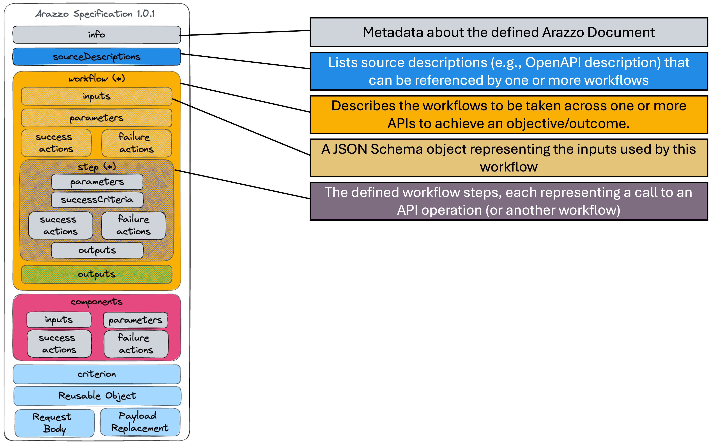
(16) Arazzo Specification: Steps Example
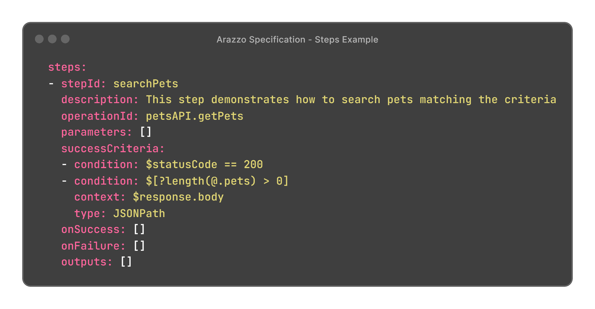
(17) Arazzo Specification: Parameters
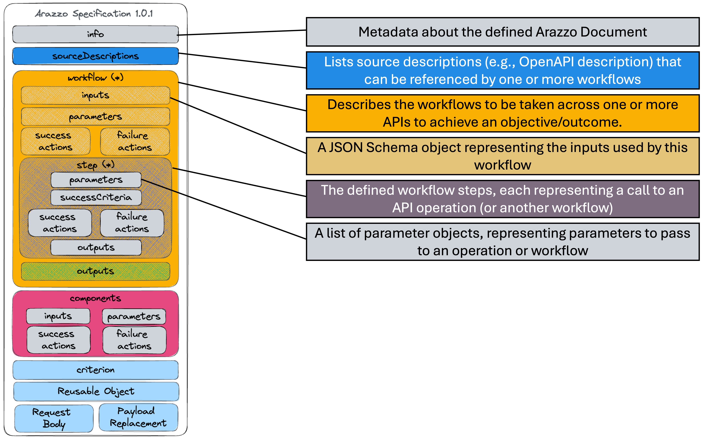
(18) Arazzo Specification: Parameters Example
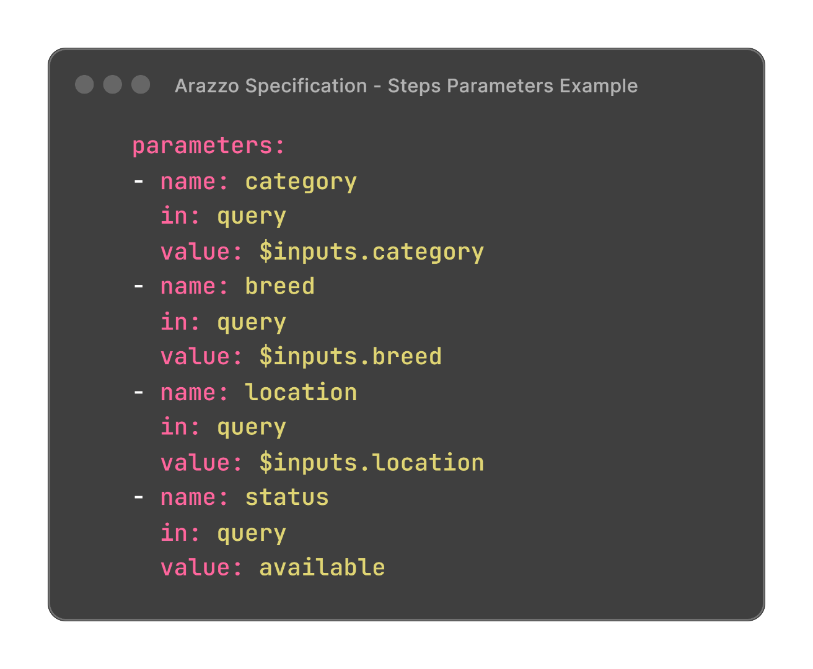
(19) Arazzo Specification: Failure Actions
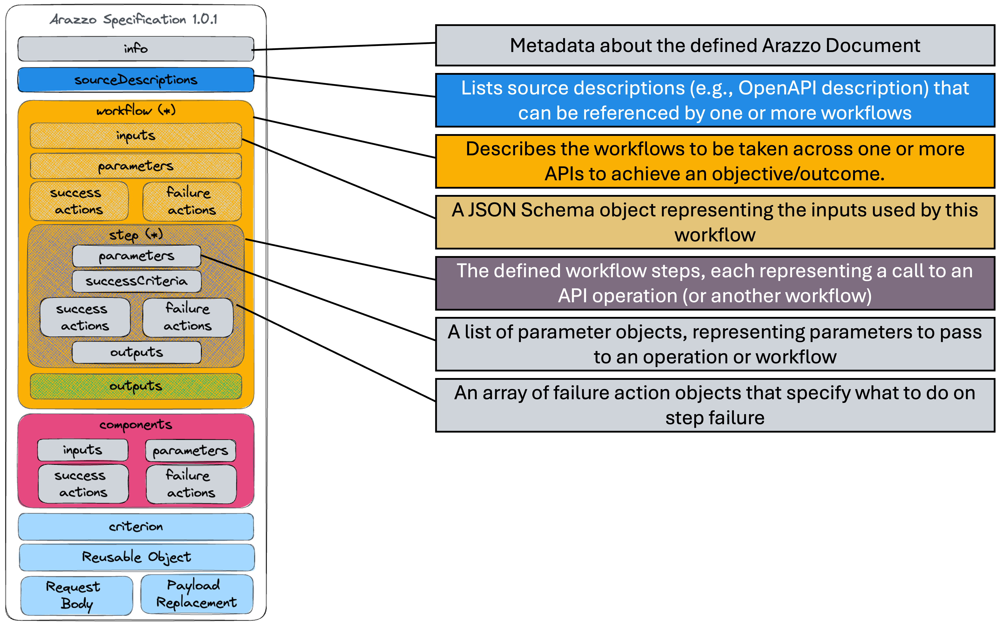
(20) Arazzo Specification: Failure Actions Example
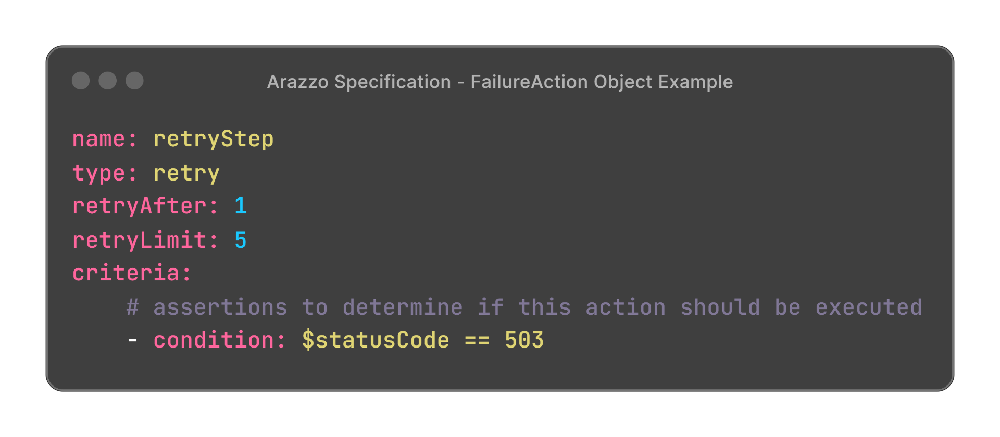
(21) Arazzo Specification: Success Actions
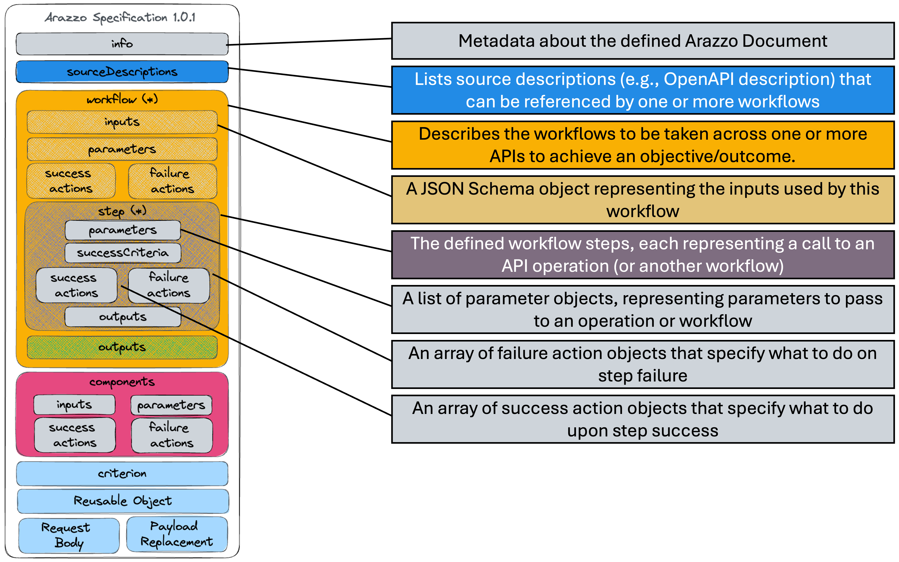
(22) Arazzo Specification: Success Actions Example
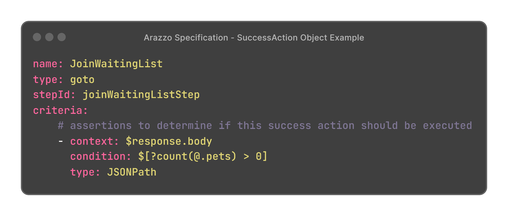
(23) Arazzo Specification: Step Outputs
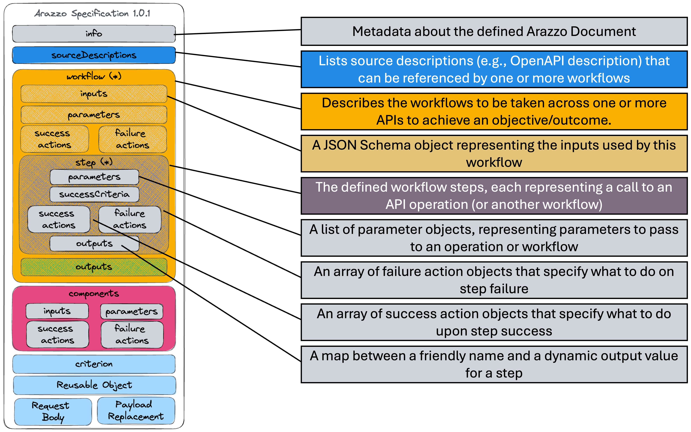
(24) Arazzo Specification: Step Outputs Example
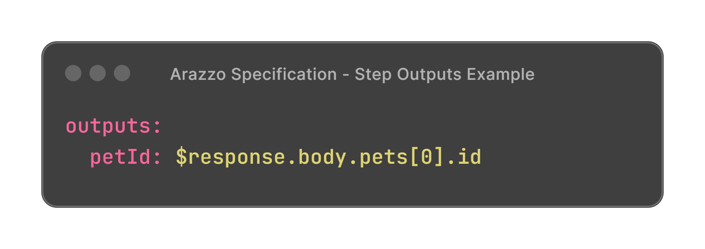
(25) Arazzo Specification: Workflow Outputs
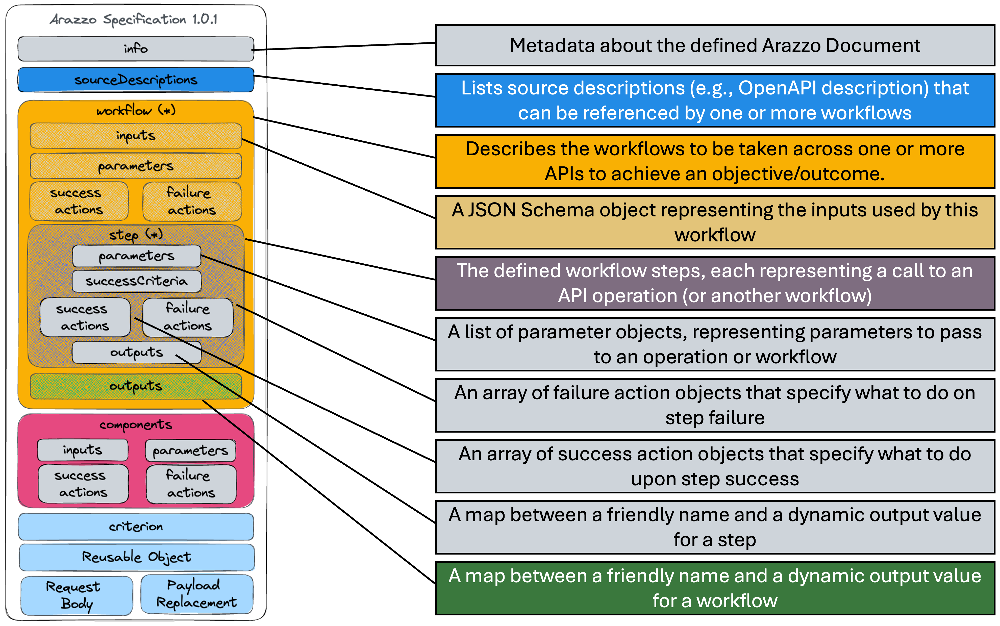
(26) Arazzo Specification: Workflow Outputs Example
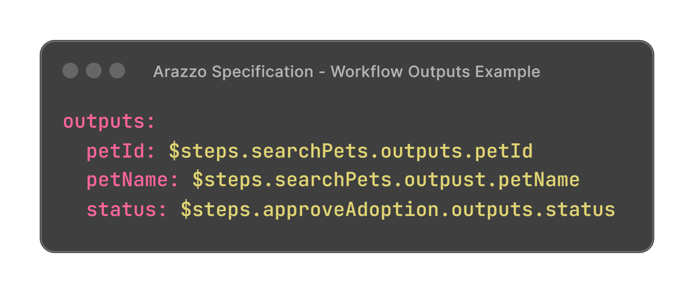
(27) Arazzo Specification: Components
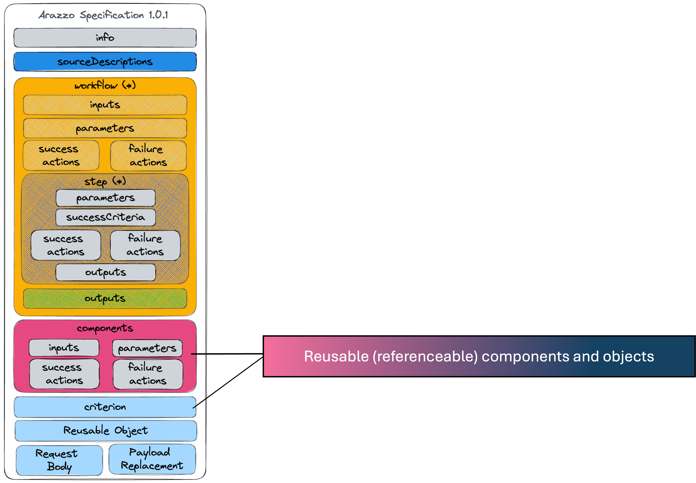